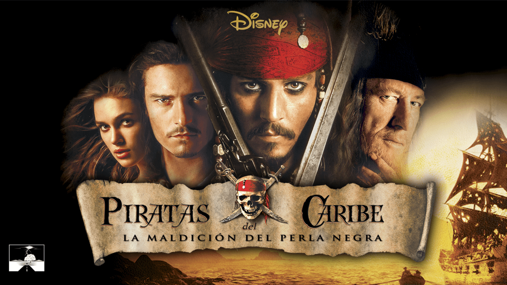

bienbinido al mundo de piratas del caribe
una emocionante pelicula de aventura, fantasia y accion que revitalizo el genero de piratas, la historia sigue al excentrico capitan jack sparrow y al joven herrero will turner en su mision para rescatar a elizabeth shann , quien ha sido secuestrada pro la tripulasion maldita del temible Capitan Barbosa
